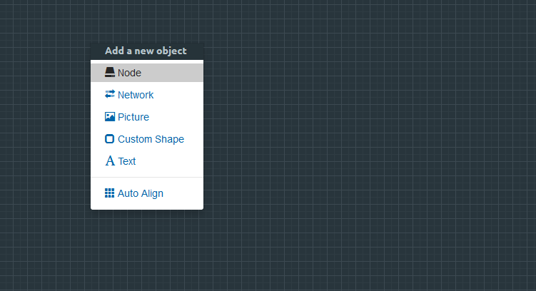
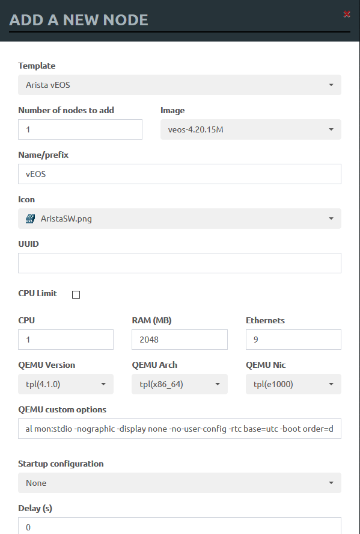
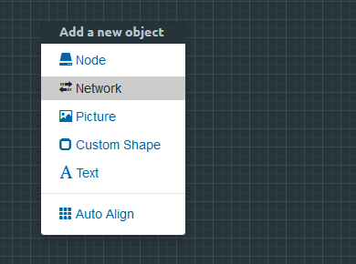
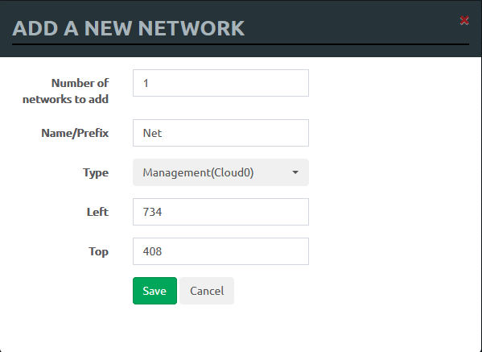
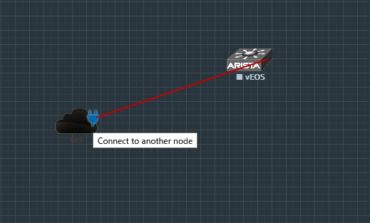
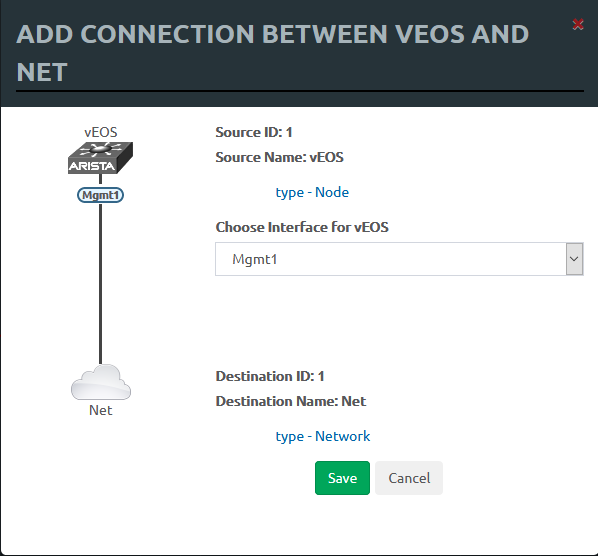
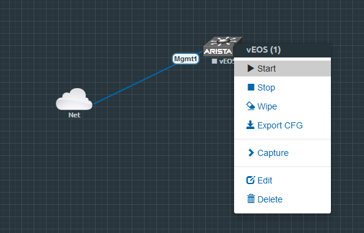

繼之前在架設lab的過程中被許許多多的狀況「折磨」過後(參照這裡)，終於找到時間接續下去了，這次就來部屬Arista ZTPServer，並稍微驗證一下client與server之間的動作，以確定正常能用 ，畢竟就算是最新的1.5.0版也很久沒更新了
這次虛擬機版本如下：
看一下python2版本
$ python --version
Python 2.7.16
安裝ZTPServer與DHCP Server
首先用安裝必要的包
# apt install git python-pip libyaml-dev isc-dhcp-server
ztpserver在安裝過程中會用pip下載所需的套件，這裡已經事先偷看過requirements.txt了
webob
routes
pyyaml
requests
sleekxmpp # dev only
mock # dev only
jsonrpclib # dev only
需要留意的是libyaml-dev要記得裝，否則安裝PyYAML的時候會跳出的小錯誤會很容易忽略，後續影響為何還要再觀察
Searching for pyyaml
Reading https://pypi.org/simple/pyyaml/
Downloading https://files.pythonhosted.org/packages/64/c2/b80047c7ac2478f9501676c988a5411ed5572f35d1beff9cae07d321512c/PyYAML-5.3.1.tar.gz#sha256=b8eac752c5e14d3eca0e6dd9199cd627518cb5ec06add0de9d32baeee6fe645d
Best match: PyYAML 5.3.1
Processing PyYAML-5.3.1.tar.gz
Writing /tmp/easy_install-DJq89r/PyYAML-5.3.1/setup.cfg
Running PyYAML-5.3.1/setup.py -q bdist_egg --dist-dir /tmp/easy_install-DJq89r/PyYAML-5.3.1/egg-dist-tmp-mJzK1J
In file included from ext/_yaml.c:596:
ext/_yaml.h:2:10: fatal error: yaml.h: No such file or directory
#include <yaml.h>
接下來設定DHCP Server，在/etc/default/isc-dhcp-server中找到以下兩行並修改
...
DHCPDv4_CONF=/etc/dhcp/dhcpd.conf
...
INTERFACESv4="ens33"
注意listen interface，這裡是ens33
$ ip link show
1: lo: <LOOPBACK,UP,LOWER_UP> mtu 65536 qdisc noqueue state UNKNOWN mode DEFAULT group default qlen 1000
link/loopback 00:00:00:00:00:00 brd 00:00:00:00:00:00
2: ens33: <BROADCAST,MULTICAST,UP,LOWER_UP> mtu 1500 qdisc pfifo_fast state UP mode DEFAULT group default qlen 1000
link/ether 00:0c:29:58:88:13 brd ff:ff:ff:ff:ff:ff
再來就是到/etc/dhcp/dhcpd.conf加入下列設定，這次沒用到的部分就先註解掉了
...
subnet 192.168.171.0 netmask 255.255.255.0 {
range 192.168.171.200 192.168.171.205;
option routers 192.168.171.2;
#option domain-name-servers <ipaddr>;
#option domain-name "<org>";
# Only return the bootfile-name to Arista devices
class "Arista" {
match if substring(option vendor-class-identifier, 0, 6) = "Arista";
# Interesting bits:
# Relay agent IP address
# Option-82: Agent Information
# Suboption 1: Circuit ID
# Ex: 45:74:68:65:72:6e:65:74:31 ==> Ethernet1
option bootfile-name "http://192.168.171.127:8080/bootstrap";
}
}
DHCP Server告一段落了
接下來是ztpserver，如果用pip的話會比較快速
$ pip install ztpserver
但這裡貪圖git裡面的各種設定及範本，所以還是用git clone的方式
$ git
$ git clone https://github.com/arista-eosplus/ztpserver.git
$ cd ztpserver/
$ python setup.py build
$ python setup.py install
安裝完成就可以啟動了
ztps
在ENE-NG上建立vEOS Switch
接著準備client，使用EVE，開起web console後就建立一個node

template選擇Arista，vEOS版本選擇4.20.15M，這是個人測試問題最少的幾個版本中最新的

建立network

選擇Cloud0，讓EVE內的QEMU虛擬機能出HOST

接下來從node那裏把線拉上network

選擇node的managent 1來作為管理之用是理所當然的吧？

完成後就可以開機了

使用Static Provisioning驗證ZTPServer動作
接下來終於要進入正題了，首先打開switch的console，預設user是admin，無密碼，先來收集我們要的資料
localhost>show zerotouch
ZeroTouch Mode: Disabled
Script Exec Timeout: 900
localhost>show version
Arista vEOS
Hardware version:
Serial number:
System MAC address: 5000.00d7.ee0b
Software image version: 4.20.15M
Architecture: i386
Internal build version: 4.20.15M-13793783.42015M
Internal build ID: 93912965-5173-490d-8662-ecb360cf75a0
Uptime: 0 weeks, 0 days, 0 hours and 2 minutes
Total memory: 2016840 kB
Free memory: 1397076 kB
zerotouch預設是disable的，EOS的機制是當startup-config為空，才會啟動agent，這裡先記下system mac address
接下來就把start-config刪了吧
localhost> enable
localhost# write erase
Proceed with erasing startup configuration? [confirm] y
localhost# reload
開好機就會看到agent在動了
localhost login: Sep 10 15:24:03 localhost ConfigAgent: %ZTP-6-DHCPv4_QUERY: Sending DHCPv4 request on [ Ethernet1, Ethernet2, Ethernet3, Ethernet4, Ethernet5, Ethernet6, Ethernet7, Ethernet8, Management1 ]
Sep 10 15:24:05 localhost ConfigAgent: %ZTP-6-DHCPv4_SUCCESS: DHCPv4 response received on Management1 [ Ip Address: 192.168.171.200/24/24; Domain: example.org; Gateway: 192.168.171.2; Boot File: http://192.168.171.127:8080/bootstrap ]
Sep 10 15:24:10 localhost ConfigAgent: %ZTP-6-CONFIG_DOWNLOAD: Attempting to download the startup-config from http://192.168.171.127:8080/bootstrap
Sep 10 15:24:10 localhost ConfigAgent: %ZTP-4-CONFIG_DOWNLOAD_FAIL: Failed to download the startup-config from http://192.168.171.127:8080/bootstrap. Error: Couldn't connect to server
zerotouch也變成active
localhost>show zerotouch
ZeroTouch Mode: Active
Script Exec Timeout: 900
接下來準備設定ZTPServer，找到這行，改成systemmac，這個設定是從agent的request header帶的值選擇去存取哪個目錄的資源，虛擬機沒serial number所以用mac
...
identifier = systemmac
...
ZTPServer預設的資源目錄是/usr/share/ztpserver，接下來就來建立給client用的資源
# cd /usr/share/ztpserver/nodes/
# mkdir 500000d7ee0b
這是測試用的startup-config，如果成功的話，agent會把這個檔案寫進flash
!
hostname test-node-1
!
username admin privilege 15 role network-admin secret admin
!
interface Management1
ip address 192.168.171.210/24
!
ip access-list open
10 permit ip any any
!
ip route 0.0.0.0/0 192.168.171.2
!
ip routing
!
management api http-commands
no shutdown
!
banner login
Welcome to $(hostname)!
This switch has been provisioned using the ZTPServer from Arista Networks
Docs: http://ztpserver.readthedocs.org/
Source Code: https://github.com/arista-eosplus/ztpserver
EOF
!
end
再來是pattern，這是用來檢查topology用的檔案，如果不符合的話就無法存取到bootstrap file，若照官方文件裡的範例是有LLDP的話是使用any: any:any，但這裡沒LLDP所以用none，否則interface會被判定不符合
---
name: static_node
interfaces:
- none: none:none
完成之後就可以再次啟動
$ ztps
可以看到switch上有startup-config，且和剛才建立的一模一樣，這樣的就能確定ZTPServer可以用啦
localhost#show startup-config
! Command: show startup-config
!
hostname test-node-1
!
username admin privilege 15 role network-admin secret admin
!
interface Management1
ip address 192.168.171.210/24
!
ip access-list open
10 permit ip any any
!
ip route 0.0.0.0/0 192.168.171.2
!
ip routing
!
management api http-commands
no shutdown
!
banner login
Welcome to $(hostname)!
This switch has been provisioned using the ZTPServer from Arista Networks
Docs: http://ztpserver.readthedocs.org/
Source Code: https://github.com/arista-eosplus/ztpserver
EOF
!
end
之後有時間再做詳細一點的練習